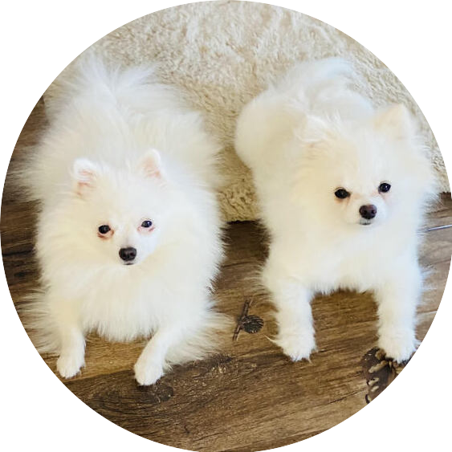

|  | 🐕Daisy si Sofia🐕Doi catei Minunati ♡Daisy si ♡Sofia sunt cei mai draguti catelusi din lume. Ei sunt din rasa pomeranian. |
| Strandard | Unitati de masura |
|---|---|
| Inaltime: | -18 to 30 cm |
| Greutate: | -1.4 la 3.2 kg |
| Durata de viata: | -12-16 anii |
| ALB | ⭐⭐⭐⭐⭐ |
| Crem | ⭐⭐⭐⭐⭐ |
| Negru | ⭐⭐⭐ |
| Porocaliu sable | ⭐⭐ |
| Rosu sable | ⭐⭐ |
| Maro | ⭐⭐⭐⭐⭐ |
Pomeranianul este considerat a fi descendent din germanul Spitz.Se crede că rasa și-a dobândit numele prin asocierea cu zona cunoscută sub numele de Pomerania, care este situată în nordul Poloniei și în Germania, de-a lungul Mării Baltice. Deși nu este originea rasei, această zonă este creditată cu creșterea care a condus la tipul original de câine Pomeranian. Documentația adecvată a lipsit până la introducerea rasei în Regatul Unit.
O referire modernă timpurie înregistrată la rasa Pomeranian este din 2 noiembrie 1764, într-o înregistrare din jurnal din Boswell a lui James Boswell în Marele Tur: Germania și Elveția. „Francezul avea un câine pomeranian pe nume Pomer, căruia îi plăcea foarte mult.”Descendența unui pomeranian și a unui lup crescuți de un negustor de animale din Londra este discutată în „A Tour in Scotland” de Thomas Pennant din 1769.